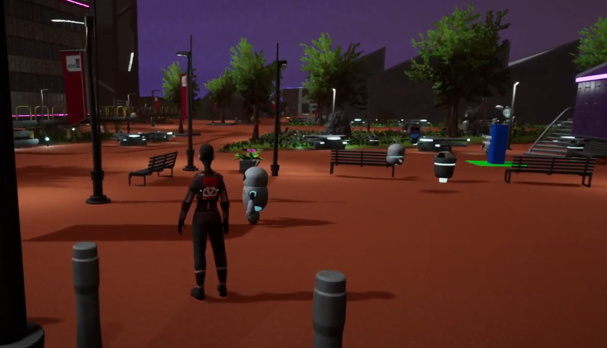

StaffsVerse Unreal Engine
Group Project | C++ | Blueprints | Currently Shortlisted for TIGA Award
About this project
After my first year of university I was successful in my application to work as a part of a group for a bursary scheme that my university was offering, out of over 250 applicants only around 20 of us were selected to work on the project.
The project was to recreate the university campus within the Unreal Engine.
My role was a Junior Developer and Quality Assurance, this project allowed me to quickly pick up and develop my skills within the Unreal Engine and experience working in a simulated game industry environment.
I developed a number of systems such as a CSV reader which would allow students to import their timetable into the system which would then provide a waypoint marker of where their respective class would be and lead them to both the building and the classroom.
A colleague and I also developed a scavenger hunt that would allow players to explore the map and collect items on their journey.I also helped colleagues develop the waypoint system integration with quests and also allow quests to update when objects were completed.
Version Control
Whilst I have experience using version control with Verint and my own personal use of GitHub, this project allowed me to experience of using GitHub as a team and understanding the importance of correctly pushing and pulling branches.
Developed
This project was developed using the Unreal Engine, using both C++ and blueprints. There were 3 teams working on the project. Artists who were creating assets for the game, Designers who planned game play elements and created a majority of the ideas for the game and programmers, which I was a member of, who coded the elements of the game and laised with design protyping their ideas and designing tools that they could use to implement elements into the game, such as assets they could easily drop into the game as collectables.
Review and TIGA Award Winner
I am proud of the work that was achieved by my team in a relatively short time frame, we worked exceptionally well with little guidance and supported each other's development and the final product benefitted from this. This project was shortlisted and won the 'Education Initiative and Talent Development' TIGA award; the team and I are extremely proud of this accomplishment.
Once the game has been published I will provide a link in order to download and play the game.
Photos
Video
This video was recorded by a colleague for a milestone demonstration.